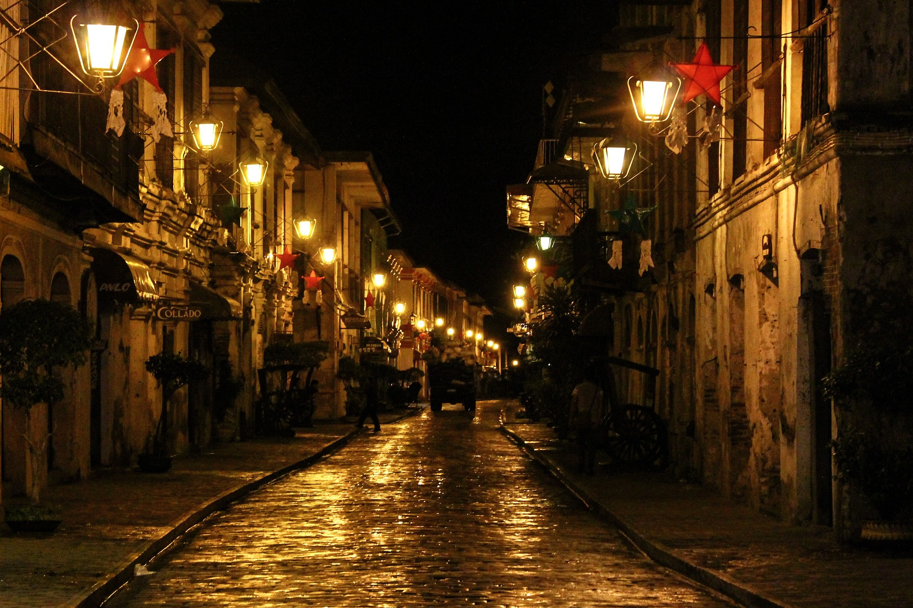
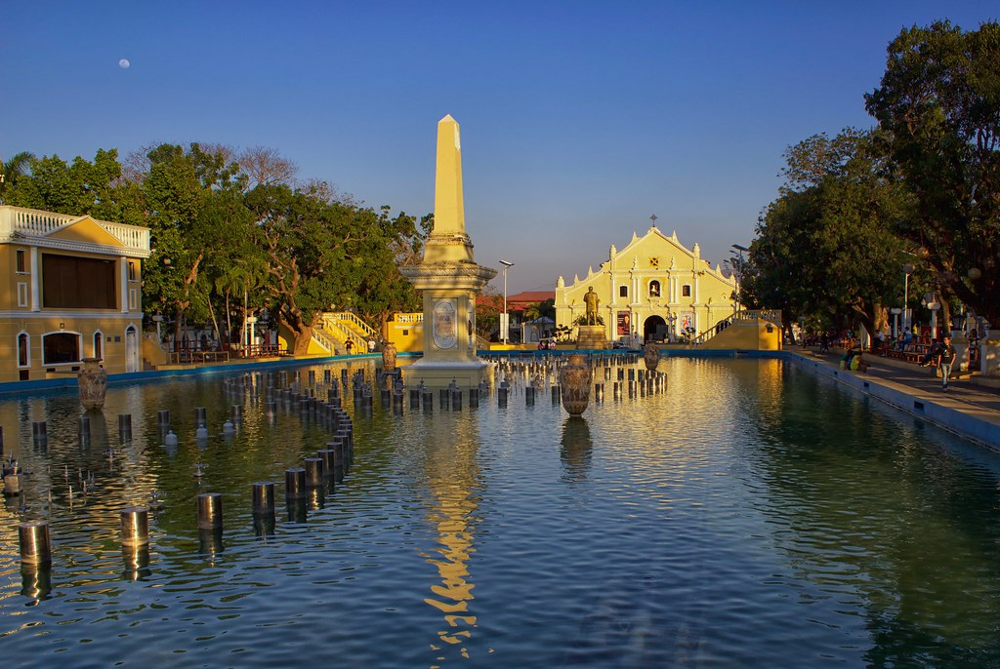

Vigan City

Vigan City in Ilocos Sur, Philippines, is a UNESCO World Heritage Site celebrated for its well-preserved Spanish colonial architecture along the iconic Calle Crisologo. This charming city showcases cultural traditions, historical landmarks, and a rich culinary scene, making it a unique destination that offers a nostalgic journey into the Philippines' colonial history. Vigan's recognition for heritage preservation and accessibility by land transport further contribute to its appeal for travelers seeking a captivating and culturally immersive experience.
Activities
 - Calle Crisologo Stroll
- Vigan Cathedral and Plaza Salcedo
- Binatbatan Festival
Calle Crisologo in Vigan City, Ilocos Sur, is a charming cobblestone street renowned for its well-preserved Spanish colonial architecture. The historic stroll features vintage street lamps, local shops, boutiques, and quaint cafés. Visitors can enjoy horse-drawn calesa rides, explore cultural events, and capture picturesque moments, creating a nostalgic and visually captivating experience.
The Vigan Cathedral, also known as St. Paul's Metropolitan Cathedral, is a stunning example of earthquake Baroque architecture with religious significance as the seat of the Archdiocese of Nueva Segovia. Plaza Salcedo, located in the heart of Vigan, is a historical square surrounded by landmarks such as the Provincial Capitol Building and the Bantay Church Bell Tower. The plaza serves as a central gathering place for various events, providing a lively atmosphere. Together, these sites encapsulate Vigan's rich history, cultural significance, and architectural charm.
The Binatbatan Festival in Vigan City, Ilocos Sur, is a vibrant cultural celebration that highlights the traditional art of weaving and showcases the rich heritage of the Ilocano people. Tourists can experience lively street dances, parades, and cultural exhibits, with a focus on preserving local crafts. To make the most of their visit, tourists should check festival dates in advance, book accommodations early, participate in cultural activities, capture memorable moments, and respect local customs. The festival, usually held in late April, offers a unique opportunity to immerse oneself in the colorful traditions and culinary delights of this UNESCO World Heritage Site.